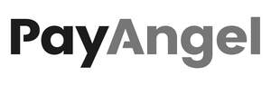

Trade Mark Journal No.2025/028 11 July 2025
UK00004200008 7 May 2025 (9,35,36,41,42)
Mark 1
Mark 2

Mark 3
Mark 4
PAYANGEL
Mark 5
PayAngel
- Class 9
- Computer hardware and software for the provision of banking services, financial services, bank account management services, monetary transfer services, payment services, financial analysis and financial reports, financial management services; authentication software with security features for identification purposes; computer software for the identification and authentication of persons; computer software for processing digital images and data; computer software for facilitating secure credit and bank card transactions; software platforms to allow users to have visibility of total monies transferred/transactions and to produce statements; application software for mobile phones; computer communication software to allow customers to access money account information and transact collection and distribution; money payment and collection software; software app to enable money to be sent, paid and saved; software app to allow visibility of monies in one place; software app to allow users schedule bill payments and make payments; secure and more transparent monetary software app, enabling easy access and control of funds; software platforms to allow users to collect money; downloadable software; digital transmitters; downloadable computer software for use as a digital wallet; electric mobile digital communication devices; computer software for use on handheld mobile digital electronic devices and other consumer electronics; software related to handheld digital electronic devices; computer software to enable the provision of information via communications networks; e-commerce and e-payment software; computer software for facilitating payment transactions by electronic means; downloadable software for use in electronically trading, storing, sending, receiving, accepting and transmitting digital and physical currency, and managing digital and physical currency payment and exchange transactions; downloadable software for e-commerce to allow users to perform electronic business transactions via a global computer network; downloadable publications; online payment software; software for processing electronic payments to and from others; computer software to enable the searching of data relating to the aforesaid; Downloadable digital monetary files authenticated by non-fungible tokens [NFTs]; Downloadable digital image and data files authenticated by non-fungible tokens (NFTs); Downloadable digital monetary wallets, money transfer files and monetary receipt authenticated by non-fungible tokens (NFTs); Downloadable computer software applications for minting non-fungible tokens [NFTs]; computer software to enable the searching of data relating to the aforesaid; downloadable computer software for use as an electronic wallet; downloadable computer software for use as a digital wallet; Information technology and audio-visual, multimedia and photographic devices.
- Class 35
- Business management and consultancy services; business administration; office functions; commercial research services, including collection, storage and processing of business and financial information, analysis of research and provision of reports; marketing services; promotion services; database management services; business consultancy services relating to the management of funds; business consultancy services; credit card registration services; Provision of an online marketplace for buyers and sellers of downloadable digital image files authenticated by non-fungible tokens [NFTs]; Retail services relating to downloadable digital image files authenticated by non-fungible tokens [NFTs]; information, advisory and consultancy services related to all the aforesaid services.
- Class 36
- Monetary services; cash management services; cash administration services; administration and management of monetary contributions; electronic money transmission services; money deposit services; savings scheme services; investment services; domestic and international money transfer services; payment services for consumers; payment processing for business; payment card issuance services; bank card, credit card, debit card and electronic payment card services; E-wallet payment services; money transfer services utilising electronic cards; financial information processing and retrieval services; financial services; financial information, data, advice and consultancy services; financial information processing; payment services; automated banking services; internet banking; credit services; credit card, debit card, charge card, cash card and bank card services; cash management; account debiting services; computerized financial services; information relating to financial and monetary services provided on-line (not-downloadable); verification, analysis and evaluation of payment transaction data, namely, providing electronic processing of financial transactions and electronic payments via a global computer network; financial risk assessment services; advisory, consultancy and information services relating to all of the aforesaid services; information, advisory and consultancy services relating to financial, banking and monetary services; information services relating to banking and finance.
- Class 41
- Provision of on-line electronic publications (not downloadable); training, educational and instructional services; arranging and conducting of conferences, seminars, symposium, workshops, exhibitions; information, advisory and consultancy services relating to all the aforesaid services.
- Class 42
- Provision of interactive software platform to allow real-time monetary and financial transactions; design of information systems relating to finance; hosting of digital content; cross-platform conversion of digital content into other forms of digital content; design and development of computer hardware and software; design and development of computer software for use in relation to financial services and financial transactions; design of information systems relating to finance and monetary transactions; design of information systems relating to banking; providing temporary use of on-line non-downloadable software for the provision of financial services, banking services, bank account management services, monetary transfer services, financial analysis and financial reports, financial management services and information services relating to banking and finance; providing temporary use of on-line non-downloadable authentication software for controlling access to and communications with computers and computer networks; providing temporary use of non-downloadable software to enable sharing of personal information; providing user authentication services using technology for e-commerce transactions; providing user authentication services using biometric hardware and software technology for e-commerce transactions; data security services; encryption, decryption and authentication of information, messages and data; authentication and verification services; electronic monitoring of personally identifying information to detect identity theft via the internet; providing temporary use of non-downloadable computer software; Providing on-line support services for interactive computer software, to enable monetary payments for individuals and businesses; Advisory and consultancy services relating to computer interactive software, to enable financial services Infrastructure; Provision of interactive computer software services, to enable digital financial transactions including, accepting payments, sending payouts, investing, insuring, and managing customers’ finances in one place; Provision of interactive computer software platform services for enabling private group contributions and donations; Providing on-line support services for collaborative computer platforms facilitating easy crowdfunding, secure & more transparent; Provision of security services for computer networks, computer access and computerised transactions; Provision of interactive computer software platform services to allow communities, individuals and businesses to start a private group or a public donation campaign; adv isory, consultancy and information services relating to all of the aforesaid services.
Payinc Group Limited
Representative: IPTogether Limited